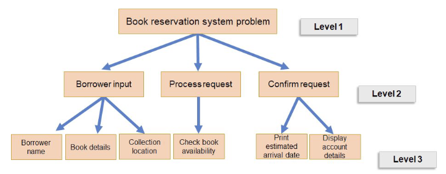

Thinking procedurally is a method used when solving computational problems. The first stage of the method involves breaking the problem into smaller subproblems. This process is called problem decomposition and can be represented as a structure diagram as shown in the example below.
The next stage is to identify the lowest-level components of the problem. In a structure diagram, the lowest-level components are the problems which aren't broken down into further subproblems.
The final stage of thinking procedurally is to decide the order in which to code the lowest-level components of the problem. Some components will depend on others having already been coded, and so the other of completion is important.